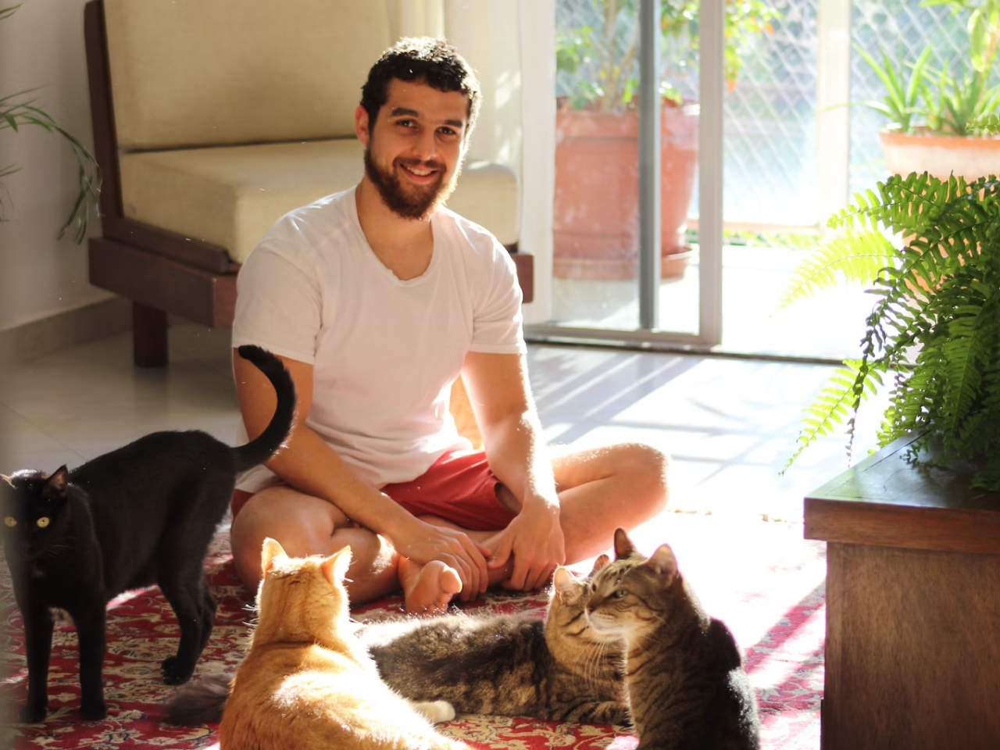
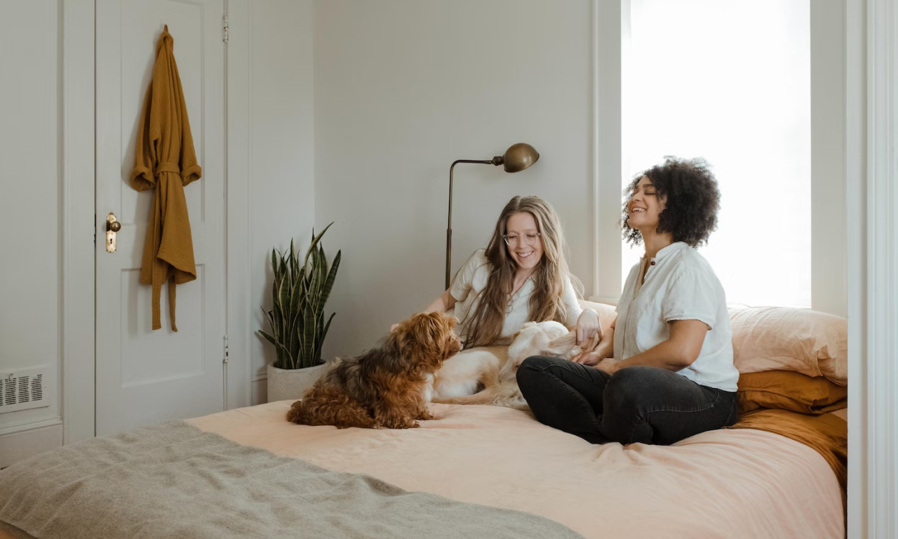

Scheduling an at-home veterinary visit for your pet provides convenience and reduces stress compared to trips to the clinic. However, taking some time to optimize your home environment and prepare your furry patient ahead of the vet's arrival will ensure the smoothest, most efficient, and positive experience for all.
Follow these tips to get your household and pet ready for the in-home veterinary appointment:
Preparing Your Home for the Mobile Vet
Preparing Your Home for the Mobile Vet is a process that helps you create a suitable environment for your pet’s health check-up at your home. Some of the steps that you can take to prepare your home for the mobile vet are:
Choose an Accessible Room
This step involves selecting a room that is easy to access and spacious enough for the vet to examine your pet comfortably. You should avoid small, crowded spaces that can make your pet feel stressed or claustrophobic.
A good choice would be a room like a living room, family room, or dining room for the exam. It should allow the vet room to examine your pet, open their mobile kit, and perform any procedures if needed.
Clear a Flat Exam Surface
This step involves clearing off a flat surface that can serve as the makeshift exam table during the appointment. You should remove any clutter or objects that can interfere with the exam or pose a hazard to your pet.
You should also cover the surface with a clean blanket or towel to provide some traction and comfort for your pet’s footing. A good choice would be a table, desk, or counter space that is large enough to accommodate your pet’s size and weight.
Make Room to Move Around
This step involves removing any furniture or objects that can obstruct the vet's movement or limit your pet's mobility. You should create some open space to walk your pet around for lameness assessments and shift positions during the exam.
This can help the vet evaluate your pet's gait, posture, and range of motion. A good choice would be to move any chairs, tables, rugs, or toys to the sides or corners of the room.
Ensure Good Lighting
This step involves optimizing the lighting in the room so that the vet can see and assess your pet’s eyes, ears, skin, and other features clearly. You should use natural light if possible or turn on any lamps or overhead lights if needed.
You should also supplement with flashlights if needed to illuminate any dark or hard-to-reach areas of your pet’s body. A good choice would be to position your pet near a window or a bright light source and have some flashlights handy in case of low light conditions.
Minimize Distractions
This step involves turning off any TVs and loud music and sequestering any other pets to allow your vet to focus on examining your pet without chaos or distraction. You should also minimize any human interruptions, such as phone calls, visitors, or children, during the appointment.
You should also calm your pet down if they are anxious or excited by using soothing words, treats, or toys. A good choice would be to create a quiet and peaceful atmosphere for your pet and your vet.
Share Medical History
This step involves having your pet's comprehensive medical history, vaccine records, medications, and supplements accessible to review with the vet. You should also inform the vet of any current symptoms, concerns, or questions that you have about your pet's health.
You should also follow any instructions that the vet gives you before, during, or after the appointment. A good choice would be to gather all the relevant documents and information in advance and have them ready for the vet.
Preparing Your Pet for Their In-Home Exam
Brush Out Their Coat
Thoroughly brushing removes mats and loose hair so your vet can closely evaluate the skin, coat, and the presence of any parasites like fleas or ticks.
Trim Nails
Trimmed nails prevent scrapes to vets during examinations and allow the feeling of lymph nodes for lumps or swelling.
Limit Food and Water
Follow your vet's pre-exam instructions regarding restricted access to food and water, which can interfere with certain diagnostics.
Prevent Potty Accidents
Take your pet outside to relieve themselves shortly before the vet arrives to avoid indoor urine or stool accidents during the appointment.
Exercise Beforehand
Take your pet for a brisk walk or engage in playtime to burn off excess energy and help them remain calm and relaxed during the exam.
Crate-Trained Pets
Place crate-trained anxious pets into their enclosed safe space in the appointment room to minimize stress and prevent hiding.
Cat Clients
Temporarily confine cats to a single room during the visit to avoid bolting and speed exam completion.
Practice Basic Obedience
Refresh your pet's training on basic cues like sit, stay, and down to assist the vet in positioning during assessments.
What to Have Ready for Common Procedures
Vaccinations
Ensure you have a current rabies certificate available and discuss any vaccine history questions.
Prescription Refills
Mention any refills needed for ongoing medications so the vet has complete medical records.
Heartworm Tests
There is no need to fast for in-clinic heartworm tests but confirm the last test date which determines if due per vet guidelines.
Fecal Exams
Provide a fresh stool sample if the vet requested a specimen to be ready for parasite screening.
Microchipping
Prepare the enrolled microchip ID number, if available, and registration contact details to complete the process.
With your home optimized for veterinary care and your furry patient groomed and ready for their visit, your mobile vet can provide thorough and attentive care from the comfort of your home.